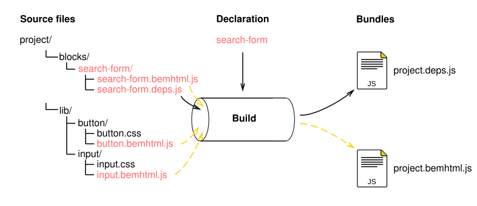

Технология для описания зависимостей
Введение
В БЭМ-методологии для явного указания зависимостей от иных блоков, элементов, модификаторов и технологий используются файлы-технологии deps.js.
К deps.js-файлам применяются основные принципы организации и хранения кода:
разделение кода на отдельные части — логика работы каждого блока, его опциональных элементов и модификаторов описывается в отдельных файлах;
группировка файлов в соответствующие директории —
deps.js-файлы для каждого компонента хранятся в соответствии с правилами организации файловой структуры БЭМ-проекта.
Зависимости описываются для всех БЭМ-сущностей, которые разнесены по файловой структуре проекта и не отражены в декларации.
В качестве примера рассмотрим форму поиска, построенную на основе блоков input (поле ввода) и button (кнопка).
Пример
Блок search-form в файловой структуре проекта:
search-form/ # Директория блока search-form
search-form.bemhtml.js # Шаблон блока search-form
Шаблон search-form.bemhtml.js:
block('search-form')(
content()([{
block: 'input'
},{
block: 'button'
}])
);
Чтобы подключить стили и скрипты блоков input и button, понадобится создать файл search-form.deps.js.
Блок search-form в файловой структуре проекта после описания зависимостей:
search-form/ # Директория блока search-form
search-form.bemhtml.js # Шаблон блока search-form
search-form.deps.js # Файл search-form.deps.js
Файл search-form.deps.js:
({
shouldDeps: [
{ block: 'input' },
{ block: 'button' }
]
})
В сборку попадут все технологии реализации блоков input и button.

Используемые обозначения
Для короткой записи зависимостей в комментариях используются следующие условные обозначения:
/* b1 → b2 */— блокb1зависит от блокаb2(shouldDeps);/* b1 ⇒ b2 */— блокb1зависит от блокаb2(mustDeps);/* b1 → b1__e1 */— блокb1зависит от своего элементаb1__e1;/* b1 → b1_m1_v1 */— блокb1зависит от своего модификатораb1_m1_v1;/* b1 → b1__e1_m1_v1 */— блокb1зависит от модификатора своего элементаb1__e1_m1_v1;/* b1.js → b2.bemhtml */— блокb1в технологии реализации JavaScript зависит от блокаb2в технологии реализации BEMHTML.
Синтаксис DEPS
DEPS-сущность — сущность, определяющая зависимость между БЭМ-сущностями.
Представить DEPS-сущность в .deps.js-файле можно следующим способом:
({
/* DEPS-сущность */
})
Полная запись DEPS-сущности имеет следующий вид:
/* DEPS-сущность */
({
block: 'block-name',
elem: 'elem-name',
mod: 'modName',
val: 'modValue',
tech: 'techName',
shouldDeps: [ /* БЭМ-сущность */ ],
mustDeps: [ /* БЭМ-сущность */ ],
noDeps: [ /* БЭМ-сущность */ ]
})
Примечание Все поля являются опциональными.
Поля DEPS-сущности можно разделить на следующие группы:
Определяющие БЭМ-сущность:
block(строка) — имя блока;elem(строка) — имя элемента;mod(строка) — имя модификатора;val(строка) — значение модификатора.
Определяющее технологию реализации БЭМ-сущности:
tech(строка) — технология, для которой собираются зависимости.
Определяющие зависимость:
shouldDeps(массив/объект) — определяет зависимости, порядок подключения которых не важен;mustDeps(массив/объект) — определяет зависимости, которые попадут в результат сборки до кода БЭМ-сущности, в которой эти зависимости объявлены;noDeps(массив/объект) — отменяет существующие зависимости, объявленные на других уровнях переопределения (например,i-bem__dom_init_auto).
Поля определяющие БЭМ-сущность
Указывают, для какой БЭМ-сущности необходимо подключить зависимость. Они могут быть восстановлены из контекста по имени файла. Поэтому следующие записи для файла b1__e1_m1_v1.deps.js эквивалентны:
/* b1__e1_m1_v1 → b2 */
({
block: 'b1',
elem: 'e1',
mod: 'm1',
val: 'v1',
shouldDeps: { block: 'b2' }
})
/* b1__e1_m1_v1 → b2 */
({
shouldDeps: { block: 'b2' }
})
Поле определяющее технологию реализации БЭМ-сущности
Указывает, для какой технологии реализации необходимо подключить зависимость. В случае, когда поле tech или его значение не указаны, зависимость считается общей и относится ко всем технологиям.
Подключение зависимостей по технологии используется, например, для того, чтобы собрать в клиентский JavaScript-бандл шаблоны только тех блоков, которые будут использованы в браузере. При такой схеме часть шаблонизации происходит на стороне сервера и, следовательно, некоторые шаблоны на клиенте никогда не используются.
Пример
Файл search-form.deps.js:
/* search-form → button.bemhtml; search-form → input.bemhtml */
({
shouldDeps: [
{ block: 'button', tech: 'bemhtml' },
{ block: 'input', tech: 'bemhtml' }
]
})
В сборку попадет только указанная технология реализации.

Поля определяющие зависимость
Поля mustDeps, shouldDeps определяют зависимости, а noDeps отменяет существующие зависимости, объявленные на других уровнях переопределения.
Сравнение shouldDeps и mustDeps
Иногда требуется изменить реализацию блока путем добавления новых особенностей на другом уровне переопределения. В этом случае необходимо, чтобы исходная реализация блока попала в сборку раньше, чем код с дополнительными правилами.
Поле mustDeps позволяет определить зависимости, которые попадут в результат сборки до кода БЭМ-сущности, в которой эти зависимости объявлены. В случае, если зависимости определяются через shouldDeps, порядок их подключения может быть любым.
Подробнее о синтаксисе DEPS.
Примеры
Подключение блока
b1 → b2 — блок b1 зависит от блока b2.
Файл b1.deps.js:
/* b1 → b2 */
({
shouldDeps: [
{ block: 'b2' }
]
})
Подключение элемента
b1 → b1__e1 — блок b1 зависит от своего элемента b1__e1.
Файл b1.deps.js:
/* b1 → b1__e1 */
({
shouldDeps: [
{ block: 'b1', elem: 'e1' }
]
})
Примечание Поле
elemподключает только элемент, но не сам блок.
Подключение модификатора
Модификатор вида «ключ-значение»
b1 → b1_m1_v1 — блок b1 зависит от своего модификатора вида «ключ-значение» b1_m1_v1.
Файл b1.deps.js:
/* b1 → b1_m1_v1 */
({
shouldDeps: [
{ block: 'b1', mod: 'm1', val: 'v1' }
]
})
Булевый модификатор
b1 → b1_m1 — блок b1 зависит от своего булевого модификатора b1_m1.
Файл b1.deps.js:
/* b1 → b1_m1 */
({
shouldDeps: [
{ block: 'b1', mod: 'm1' }
]
})
ИЛИ
Файл b1.deps.js:
/* b1 → b1_m1 */
({
shouldDeps: [
{ block: 'b1', mod: 'm1', val: true }
]
})
Подключение зависимостей по технологии
b1.js → b2.bemhtml — блок b1 в технологии реализации JavaScript зависит от блока b2 в технологии реализации BEMHTML.
Файл b1.deps.js:
/* b1.js → b2.bemhtml */
({
tech: 'js',
shouldDeps: [
{ block: 'b2', tech: 'bemhtml' }
]
})